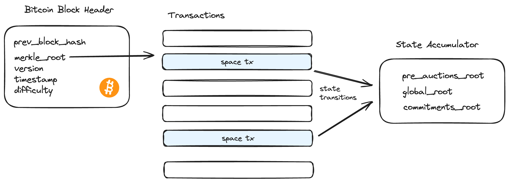
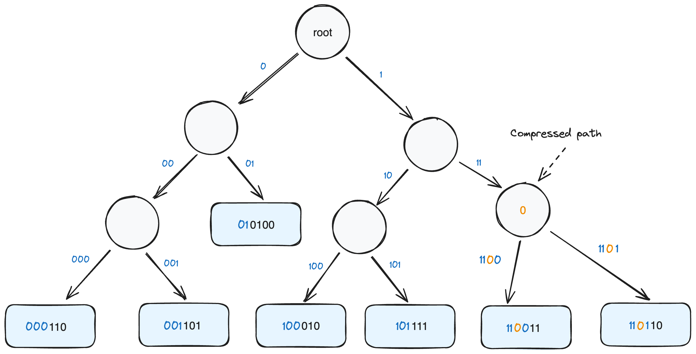

Spaces Protocol
Scalable & Permissionless Bitcoin Identities
Spaces
Spaces is a naming protocol that leverages the existing infrastructure and security of Bitcoin1 without requiring a new blockchain or any modifications to Bitcoin itself. “Spaces” serve as community identifiers that are distributed through an auction process built using existing Bitcoin scripting capabilities. Proceeds generated through auctions are irrevocably burned. Within each Space, users can create “Subspaces,” which serve as trustless individual identities, operating with a high degree of autonomy primarily off-chain but can also submit transactions directly on-chain. Spaces is designed to be verifiable by end-users in a trustless manner without requiring a full node. This is achieved through a stateless zero-knowledge light client built using RISC0 zkVM2. The protocol essentially acts as a scalable & trustless ~250KB Bitcoin certificate authority.

Background
Public Key Infrastructure (PKI) is a critical component of internet security, enabling secure communication and authentication between parties. However, traditional PKI systems often rely on centralized authorities, which can be vulnerable to attacks, censorship, and single points of failure. This has led to a growing interest in decentralized PKI solutions, particularly those built on blockchain technology. Over the past decade, various decentralized naming protocols have emerged to address this need. Namecoin3 pioneered this field in 2011 but fell short due to usability issues and a significant number of inactive or “squatted” domains4. The Ethereum Name Service (ENS)5 has become the most widely adopted naming system, primarily because most ENS users rely on trusted third parties for resolving .eth identities. However, this reliance on intermediaries undermines the decentralized nature of these names, and ENS lacks meaningful light client support.
The Handshake6 blockchain attempted to improve upon Namecoin’s design by introducing an auction process for acquiring names. However, this approach has proven ineffective, as bots can open numerous auctions during a short time period and acquire valuable names unnoticed. Being a niche blockchain with limited utility, focusing on an alternate root to the existing DNS, Handshake faces substantial challenges. First, it fails to match the security found in well-established blockchains such as Bitcoin. In addition, name collisions further undermine its practicality, violating a crucial principle of URLs: uniqueness. This unique identification permits the unambiguous sharing of links and access to web resources. Inconsistent user configurations or name resolution preferences will affect even more subtle issues such as the loading of subresources on the web.
These innovations fall short of delivering the security attributes inherent to a robust Proof-of-Work blockchain such as Bitcoin. This paper seeks to address these shortcomings, proposing a highly secure, scalable and decentralized PKI anchored in Bitcoin.
Name Syntax

A “Space” acts as a community identifier in the Spaces protocol, similar to a top level domain like .com or .org on the traditional web. For instance, in the identity “bob@bitcoin”, ‘bob’ represents a subspace or a member of the ‘bitcoin’ community.
Acquiring a Space

The protocol uses an auction-based method for distributing names, rather than a first-come first-serve approach, aiming to prevent any single entity from accumulating a disproportionate number of valuable names. Since auctions alone cannot entirely eliminate the possibility of name squatting, and to further ensure fairness, the protocol introduces a dynamic name rollout process to control the release of names through a pre-auctions phase ensuring that each name gets adequate attention and the opportunity for fair & open public bidding.
Pre-auctions phase
During the pre-auction phase, users propose names they're interested in. Names that receive enough interest, determined by their highest bid values, advance to the auction phase. The protocol caps the number of spaces released to 10 per day, or a total of 3600 community spaces per year.
Auctions phase
When a pre-auctions Space advances to the top 10 on a given day, it enters the auctions phase. Auctions last for 10 days. To discourage last-minute bidding, new bids extends the auction duration by one day.
Auction Design
The basic principle behind the auction mechanism is selecting some UTXO to represent the Space (known as the “Space UTXO”). This UTXO is “passed” around by bidders until the auction concludes. An open transaction is first submitted to initiate the auction and place the initial bid.
A bid is made by burning the amount in an OP_RETRUN output. In addition, the bidder also leaves a partially signed Bitcoin transaction (PSBT) that says, “If I’m outbid, the next person may consume my Space UTXO, as long as they give me my money back.”
For instance, consider Bob as the initial bidder who commits 1 BTC. Alice comes along and decides to bid 1.5 BTC, she completes Bob’s PSBT, which gives Bob his 1 BTC back, and she then burns an additional 0.5 BTC, increasing the total burned amount for the auction to 1.5 BTC. Alice shares her own UTXO and PSBT, representing the new leading bid for the Space UTXO. This pattern continues until the auction concludes.
To facilitate this process, some transaction with at least two UTXOs is necessary. One is used as the Space UTXO while the other is spent in the bid transaction. This makes it possible to “compress” the entire PSBT into a 65-byte format to fit within the OP_RETURN output, which is already being used to burn the bid amount.
The following figure illustrates the input/output pair bundling a PSBT in a bid transaction:
To reconstruct a PSBT from its compressed form, the first step is to recover the Space UTXO outpoint, which includes a 32-byte transaction ID and an output index. The transaction ID can be obtained by identifying the input index that corresponds to the OP_RETURN output, as both should align index-wise. Since this input originates from the transaction that includes the Space UTXO, its transaction ID is used. Within the OP_RETURN data, the initial byte indicates the Space UTXO’s output index. For instance, the Space UTXO in the referenced figure would be identified as outpoint #f9395e:6. The Space UTXO’s locking script is used as the refund address and its value is added to the refunded bid amount. This PSBT is then used to construct the next bid transaction, continuing with this pattern until the auction concludes.
In scenarios where multiple bids are placed simultaneously on the same Space UTXO, only one bid will succeed in burning the coins. This is because other bids will attempt to spend a UTXO that has already been spent and their transaction will be rejected by Bitcoin full nodes. Similar techniques have been used in the past to implement Dutch auctions7, although they do not allow for arbitrary bids and may require a larger on-chain footprint to implement for this purpose.
Protocol-specific rules are enforced through a client-side consensus node. For example, spending the auctioned UTXO without following the auction pattern or attempting to register the Space before the safe closing period is technically possible, but it violates a protocol rule, which causes the auction to be invalidated. As a result, the offending bidder will lose their coins. Additionally, it’s important to open auctions with zero or low initial bids. If two auctions for the same name open simultaneously, only the first auction will be recognized.
Finalizing an Auction
Auctions continue indefinitely until a winning bidder chooses to conclude the process once the Safe Closing Period (SCP) begins. The SCP begins following a predetermined timeframe, approximately 10 days, once a Space transitions from the pre-auctions pool to the active auctions phase.
Spaces start in a pre-auctions pool, awaiting interest from potential bidders. This pool functions as a priority queue; Spaces ascend within this queue as their bids increase. Every 144 blocks, roughly equivalent to one day, the top 10 Spaces in this queue are moved into the auctions phase.
Assuming a Space enters the auctions phase at block N, the auction then spans 1440 blocks from this point, with the SCP set to start at N+1440. This creates a window during which bids can be placed and extended. If a bid is placed towards the end of the auction, specifically on the 10th day or later, it extends the SCP by an additional 144 blocks from the bid’s block.
To finalize an auction, the winning bidder must actively end it, once the SCP begins. This closure is done by creating a transaction that spends the last Space UTXO, signaling the end of the auction and establishing the bidder as the new owner of the Space. If the winning bidder does not conclude the auction, the Space remains unregistered and open to new bids. Ending the auction before the SCP starts will invalidate it, resulting in the bidder losing their coins.
Space UTXOs
After an auction is finalized, the Space is represented as a Bitcoin UTXO. Space UTXOs can hold any value, just like regular Bitcoin UTXOs. Moreover, any coin a user might already possess can be converted or “marked” as the Space’s UTXO. They’re similar in principle to Colored Coins8 except they’re indistinguishable from standard UTXOs. They can be used for payment in Bitcoin transactions, and returned as change. Space UTXOs do not necessarily expand Bitcoin’s UTXO set size more than a normal UTXO used to hold value would. The protocol encourages their use in transactions, serving a dual purpose: it facilitates regular Bitcoin transactions and simultaneously renews the Space’s registration, thereby preventing its expiration.
There’s one rule when it comes to transacting with Space UTXOs. If a Space UTXO is used as an input at a certain index within a transaction, the corresponding output or change, i.e. - the new Space UTXO must be placed at the next sequential index. For instance, if the Space UTXO is at input index 2, then the new UTXO must be at output index 3. This facilitates trustless and non-interactive resale of Spaces in secondary marketplaces by creating a PSBT with signature type SINGLE|ANYONECANPAY using the Space as the input and the required payment is set as the output.
The figure below illustrates how Space UTXOs “move” in a transaction:
The example also illustrates how Space UTXOs 1 and 2 are funding a transaction and being returned back as change. Similarly, they may be transferred to a new owner.
To ensure active utilization of Spaces and prevent valuable names from getting lost, the protocol requires renewals to ensure that a Space’s owner is still in control of their UTXO.
Subspaces
Subspaces are unique identifiers operating off-chain within a community Space. Once created, a subspace cannot be revoked unless it expires. These identities are organized into a Merkle tree off-chain, and the root of this tree is submitted on the Bitcoin blockchain by the Space’s operator. Updates to the tree are managed through zero-knowledge validity proofs which confirm the integrity and current state of the tree without revealing the individual updates. Subspace owners have the flexibility to conduct transactions off-chain via the Space’s operator or opt to bypass the operator and directly submit their transactions on-chain.
Subspaces use a Merkle-ized binary trie structure
Ownership of a subspace is verified through a Certificate, which contains the owner’s public key and a proof linking them to the community’s on-chain commitment. In the figure above, ‘bob’, ‘charlie’, and ’lily’ each hold certificates linked to the commitment ‘r0’.
State Commitments
Commitment updates are state transitions for names underneath a parent Space. To ensure the integrity of these transitions, a zk-STARK validity proof is required. This proof serves to confirm that:
- New additions did not previously exist in the tree.
- Individual state transitions for each subspace are authenticated by a signature corresponding to their public key.
Example structure of a commitment:
struct Commitment {
root: [u8 ; 32],
resolutions: Vec<bool>,
resolutions_block: u64,
revocations: Vec<[u8; 32]>,
validity_proof: Vec<u8>
}
An entity responsible for administering a Space is known as the ‘Operator’. Operators bundle transactions and submit updated commitments. Multiple commitments for various spaces may be bundled with a single validity proof.
Certificate Lifecycle
Consider a sequence of commitments R = (r0, r1, r2, …., rN). A key aspect to note is that a witness associated with a previous commitment (e.g., ‘r0’) does not validate against a later commitment (e.g., ‘r1’). We cannot rely on the liveness of Operators to provide updated certificates as it reduces the autonomy given to subspaces. Instead, Certificates which serve as proof of ownership are valid for one year.
Off-chain Transactions
The majority of transactions are expected to be off-chain. Subspace owners use their Certificate to submit off-chain transactions through the operator by signing it with the Certificate’s public key. The Operator will issue updated Certificates reflecting the changes they made.
On-chain Transactions
Operators are not trusted entities and their submissions require validity proofs. However, they could still refuse transactions or even accept transactions but withhold updated certificates. The protocol offers great autonomy to subspaces as they could always take their transactions on-chain.
Let’s look at our commitments again: R = (r0, r1, r2, …., rN). Assuming Bob holds a valid Certificate from r1 for bob@bitcoin, they could use it to transact on-chain. Since this is the first state we have seen for bob@bitcoin on-chain, their name enters a Provisional state. Active operators are required to address all subspaces in a provisional state using the resolutions bit set in their commitment as it is covered by the validity proof. Each resolution costs only 1 bit, and the order depends on the order of provisional names appearing on-chain since the last resolutions_block. If the bit is set, the name is finalized. Otherwise, it indicates the Certificate was revoked in a successor transaction and the state submitted by Bob does not match the most recent state.
Names in a provisional state can continue to create on-chain transactions without having to wait for finalization as they have a chain of signatures leading to a non-expired Certificate. However, buyers should be wary of subspaces that are not yet finalized as the Certificate may have been revoked in a future commitment. The speed in which names in a provisional state are finalized depends on how often the Operator submits commitments.
Once a name is finalized, it’s given complete autonomy on-chain and functions exactly as a top-level Space. The owner can choose to go back to collaborating with an Operator if they wish.
In case of inactive operators, see Loss of Liveness.
Renewals
Renewals ensure active utilization of names. Subspaces must be renewed once a year as their certificates expire. They could be renewed on-chain and off-chain.
Off-chain renewals are tied to a parent’s commitment. Every on-chain commitment is effectively a renewal for the parent Space. This ensures that if a parent expires all of their off-chain subspaces expire at the same time.
On-chain renewals extend a subspace’s life beyond the parent. If a parent Space expires, all on-chain subspaces remain. A new owner of the parent Space may continue to offer services for those names.
Loss of Liveness
Loss of liveness means the operator no longer submits on-chain commitments eventually leading to the expiry of the parent Space. Loss of liveness creates a “supernova” event where the entire Space and all the state of the hidden but expired subspaces is destroyed. On-chain subspaces in the provisional state are automatically finalized when a Space expires as any hidden state is considered expired.
For off-chain subspaces, this situation does not pose an immediate issue. They have a full year to renew their names, but unlike before, they must do so on-chain as renewals through the operator are no longer possible.
If the parent Space is later auctioned and acquired by a new owner, this entity can resume services for existing subspaces and also establish new ones.
Operators
Operators use recursive zk-STARK proof composition to bundle multiple commitments for different Spaces into a single validity proof to be submitted on-chain. This significantly reduces the on-chain footprint.
Example structure of bundled commitments:
struct Commitment {
space: [u8 ; 32],
root: [u8 ; 32],
resolutions: Vec<bool>,
resolutions_block: u64,
revocations: Vec<[u8; 32]>
}
struct Bundle {
commitments: Vec<Commitment>,
validity_proof: Vec<u8>
}
Revocations
Certificates have a one-year validity period. In cases where a subspace was acquired from a secondary marketplace, it may be desirable to immediately revoke previous certificates instead of relying on time-based revocation. The following are the different ways certificates can be revoked:
- Time-Based Revocations: Simply wait for older certificates to expire.
- Off-Chain Revocations: An off-chain record storage protocol must prioritize recent certificates. Clients can check for revocation by querying multiple peers with the certificate ID. This should provide adequate security for many applications without any on-chain impact.
- Operator Revocations: During an off-chain transaction, users can opt to pay an additional fee to the operator to add the name hash to a
revocationslist as part of the validity proof update. This method is efficient, requiring only a 32-byte footprint per name. - On-Chain Revocation: If the operator is unavailable or uncooperative, the name owner can directly submit their transaction on-chain. This method instantly revokes all previous certificates, even if the name is still in a provisional state, as it reveals a more recent state compared to the older certificates.
Other revocation techniques may be explored, such as building off-chain cascading bloom filters, but these are subject for future research.
Scheduling
Given the scarcity of block space, finding a balance between rapid commitment updates and the on-chain footprint is crucial. Since zk-STARK proofs can be nearly constant-sized due to proof composition, aggregating as many transactions as possible into a single commitment is advantageous.
Currently, the RISC0 zkVM2 is capable of generating concise zk-STARK proofs, occupying less than ~250KB, not accounting for the public outputs. While it should be feasible to implement a mechanism that maintains the trustless nature of subspace commitments while enabling rapid progression of the protocol state entirely off-chain, on-chain validity proofs are still required. Depending on the volume of transactions, STARK proofs might be feasible to submit on-chain on a monthly basis.
In addition to zk-STARKs, there’s potential for further compression of proofs using zk-SNARKs, which can shrink the data to the range of hundreds of bytes. This compression does introduce additional trust assumptions, which might be deemed acceptable temporarily by some clients to update their state sooner while waiting for the zk-STARK proofs.
Accumulators
Spaces implements dynamic hash-based accumulators, similar in function to Utreexo9, to summarize the protocol’s entire state in 96 bytes consisting of global_root, commitments_root and pre_auctions_root.
- global_root represents the root hash of the global name tree keeping track of name states for spaces and on-chain subspaces in a binary trie structure.
- commitments_root stores state commitment roots for various spaces. Keys are a concatenation of a space’s hash and commitment root e.g.
HASH(space_hash || commitment_root)in a binary trie structure. - pre_auctions_root is the tree root of a Merkle-ized max heap (priority queue) data structure keeping track of spaces in the pre-auctions pool.
Below is a visual guide for the various trees that collectively embody the structure of the protocol:

Binary Trie
The protocol is designed to work with zero-knowledge light clients and as a result it necessitates a universal accumulator to support membership and non-membership proofs for batches of elements. To achieve this, we implement a binary trie known as a Merklix10 tree. Various Trie structures have been used in blockchains in the past. For instance, Ethereum11 currently uses a base-16 trie and have been exploring the transition to a binary trie12. Handshake6 uses some variation of a binary trie with its tree root included in the block header. Spaces does not require modifications to Bitcoin’s block header itself but it can accumulate name data into a state root in a verifiable way using zero-knowledge proofs.
The individual bits of the keys are used to route the leaf nodes to their appropriate paths. A trie offers simplicity over a Sparse Merkle Tree, as the latter necessitates dealing with empty leaves. The tree has only two types of nodes: An internal node, potentially containing a prefix for path compression, and a leaf node. Considering keys are hashed prior to insertion, they consistently have a fixed length. The overall depth of the tree is therefore determined by the number of bits produced by the hash function.

Sub Trees
It is possible to prove both the existence and non-existence of single or multiple keys by extracting a portion of the larger tree whilst concealing the branches of irrelevant nodes. For instance, consider the figure above demonstrating the larger tree. If we want to prove the existence of keys 000110 and 010100 and additionally prove the non-existence of keys 0111001 and 000111, we can selectively carve out a specific subtree. Importantly, this subtree still hashes to the same tree root as the larger tree:
The above subtree includes the leaves we’re interested in and also proves the non-existence of 0111001 and 000111 (or any keys with prefixes that traverse exposed paths). It’s important to note that we lack the necessary information to make conclusive statements about keys starting with 1 or 001 as these paths need to be revealed.
Similarly, we can execute operations on the subtree just as we do the larger tree. For insertions, we can only insert into the revealed paths and we can also update the values of existing keys.
A significant advantage of this structure is its capacity to function as an accumulator. We can make modifications by working primarily with small subtrees, while only keeping track of a single tree root to represent the accumulator state, not an entire database.
Light Clients
A zero-knowledge light client needs to perform two main tasks: verify Bitcoin’s header chain, similar to the header chain proof by ZeroSync13, and enforce protocol specific rules. This also involves verifying zk-STARK proofs linked to the on-chain commitments for subspaces and producing a 96-byte state header in its public outputs. This state header effectively encapsulates the entire state of the protocol and serves as a trust anchor for certificate verification.
For instance, verifying a Space requires checking an inclusion proof hashes to the global_root in the state header. The same process applies to validating an on-chain subspace. For off-chain subspaces, a client needs to check an exclusion proof against the global_root and then verify an inclusion proof related to the commitments_root.
Record Storage
The core functionality of the Spaces protocol is centered around its role as a certificate authority, as it does not inherently provide a mechanism for storing records on-chain. This design choice keeps the protocol streamlined and focused on its primary task of securely managing and verifying digital spaces and identities within the Bitcoin network.
The trustless nature of the protocol makes it an ideal foundation for developing a Peer-to-Peer (P2P) protocol that uses Spaces as a trust anchor to support record storage and other use cases entirely off-chain. Additionally, integrating Spaces with various other protocols such as Nostr14 is relatively straightforward.
References
-
https://www.cs.princeton.edu/~arvindn/publications/namespaces.pdf ↩︎
-
https://medium.com/summa-technology/summa-auction-bitcoin-technical-7344096498f2 ↩︎
-
https://blog.vermorel.com/pdf/merklix-tree-for-bitcoin-2018-07.pdf ↩︎
-
https://ethereum.org/en/developers/docs/data-structures-and-encoding/patricia-merkle-trie/ ↩︎